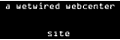
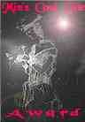
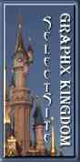

Awards won in January 1998
Here are the awards that the "Paintings and Arts on Stamps" site won in the month of January 1998. Because the images use some space on the server, I decided to stop here. I would like to thank a lot all Webmasters who have taken the time to review my site and decided to reward me with their nice awards!
| "Fly With Eagles" Award | Internet Innovator Award | Approved by WetWired WebCenter |
Musicians Network Award for Best Design |
|
 |
|
| Cool Site Award | Bloboo Awards | The GraphX Kingdom Select Site Award |
The
WSN, Non Sporting site, Web award |
|
 |
 |
|
| Cool Site Award for Excellence |
Cranky Monkey Award | KJEM's Most Treasured | Home Grown Award of Excellence |
| Home & Hearth Award of Excellence |
Canuck's Award for World Class Site |
Jumbles Gold Award | The Critical Mass Award |
Some Webmasters' comments:
-
Congratulations to each of you! you have been selected as winners of the HomeGrown Excellence Award! Man... there sure were some fantastic web pages in this bunch!!! Some of the more outstanding ones were: ... Paintings & Art on Stamps! To each of the winners I would like to say "Thank You!" 1/17/98
-
I was very impressed by all the hard work you have put into the site and have to congratulate you on an outstanding achievement in web site design, both in appearance and content. Your site is truly an exceptional presence on the web, that reflects the highest standards of creativity and professionalism. I just want to add that your site is above and beyond any that I have seen in a long time. VERY VERY impressive control of html, and graphic design. Sincerely, Ben 1/18/98
-
Congratulations!!......Your site definitely qualifies for the "Critical Mass Award". An exceptional site, excellent design, beautiful original graphics, and your content is informative, entertaining, presented well and easy to access. A *worthy* enterprise and a positive contribution to the Web. Thanks for helping make the Web a more interesting, fun and attractive place to visit. I really enjoyed my visit to your site and will return again when time permits :). Bill 1/31/1998